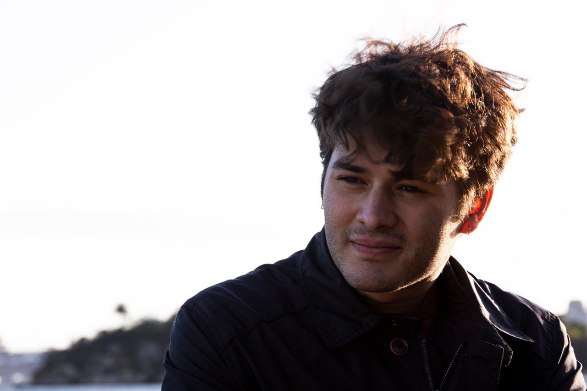

About

Rodrigo Pantoja Labiaga is a Mexican composer and guitarist currently based on Boston, USA. He specializes in writing music for film, television and multimedia.
Influenced by both jazz and classical language, Rodrigo's music explores the intersection of these traditions while drawing inspiration from a wide range of musical and cultural influences. Beyond music, he has a passion for landscape photography.
Rodrigo is currently finishing his studies in Film and Media Scoring and Electronic Production and Design at Berklee College of Music.
Curriculum Vitae